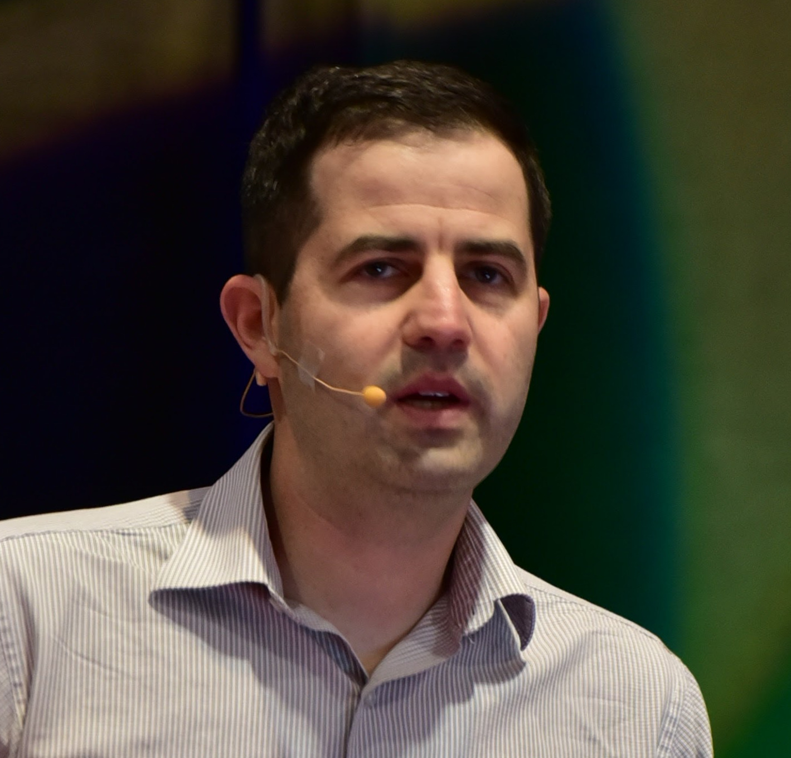

A PhD-led apprenticeship preparing San Ramon 6th & 7th graders for success in the highest levels of STEM.
Enter your email to receive the meeting link and an overview of our pedagogy.
Standard middle school math—even in accelerated tracks—focuses heavily on rote memorization and procedural calculation. However, true success in high school Honors, AP Calculus, and university-level engineering requires an entirely different skill: formal logic. We bridge this critical gap. We don't just teach students how to calculate an answer; we teach them exactly why a mathematical statement is true.
No passive worksheets. Students act as "scribes," transcribing formal whiteboard derivations to build their own permanent, theory reference textbook.
Students master the fundamentals of algebra and geometry, learning to formally prove mathematical rules rather than blindly memorizing them.
To test their understanding and build speaking confidence, students regularly defend their mathematical thinking out loud to the class, mirroring a thesis defense.

Led by a local San Ramon resident and engineer who created this program as a community project to share his passion for mathematics. His goal is to help local students bridge the gap between standard calculation and true, high-level logic.
Ages: 11–13 (6th & 7th Grade)
Dates: 7 Weeks (Mid-Sept to Early Nov)
Times: TBD
Format: In-person at San Ramon Parks & Rec
Registration will be processed officially through the City of San Ramon Activity Guide. Join the email list above to be notified the moment registration opens.
Register via San Ramon Parks & Rec